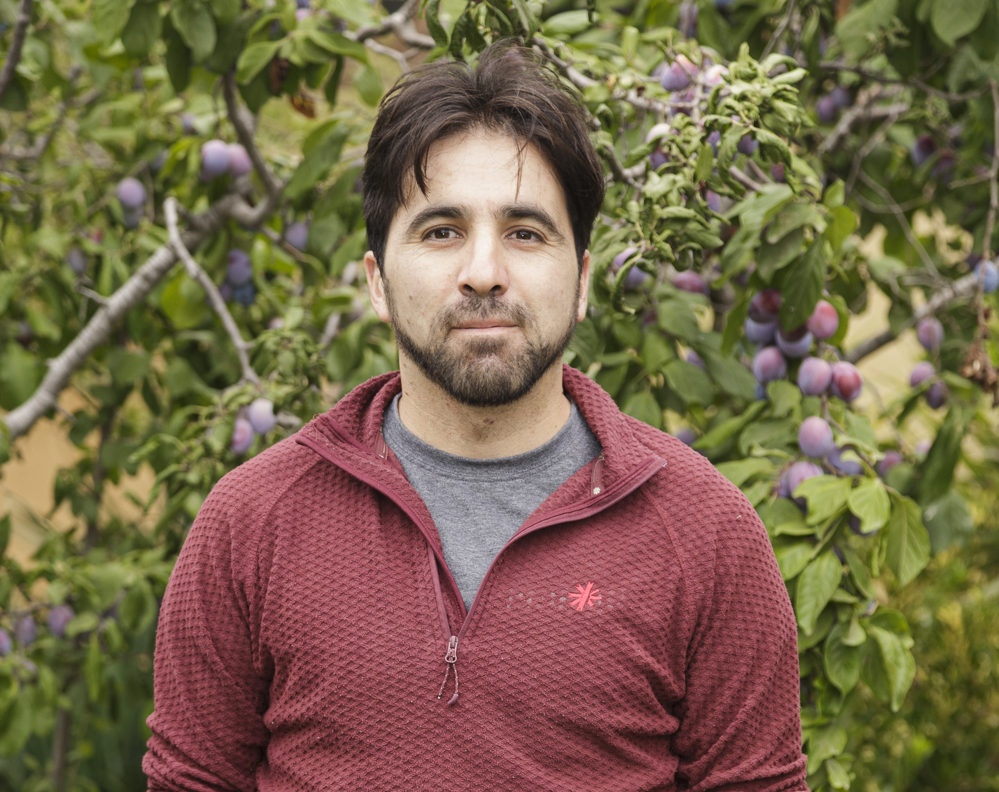

Más de 10 años de experiencia en fútbol universitario.
Educación
- Profesor de Estado de Educación Física
- 2006 - 2010. Universidad de Santiago de Chile
- Magíster en Gestión de la Actividad Física y deportiva
- 2021 - 2022. Universidad Andrés Bello

Experiencia Profesional
- Entrenador de Fútbol
- 2012 - Facultad de Ciencias Físicas y Matemáticas, Universidad de Chile
- Profesor de Futsal
- 2016 - .Facultad de Ciencias Físicas y Matemáticas, Universidad de Chile
Información adicional
- Diplomado en planificación y proyectos deportivos; 2022.
- Antropometrista Nivel 1; 2021 - 2024.
- Curso video análisis táctico de Fútbol; 2020.
- Certificado Internacional Nutrición, Ejercicio y Rendimiento Deportivo; 2020.